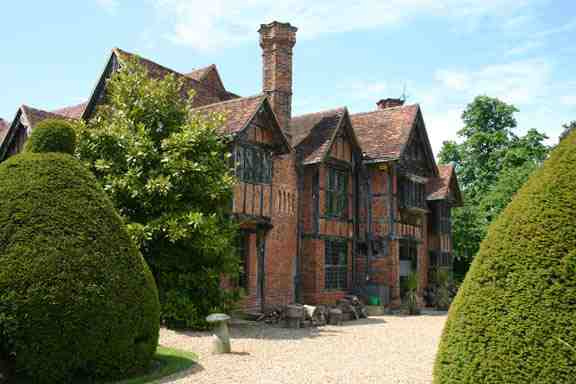
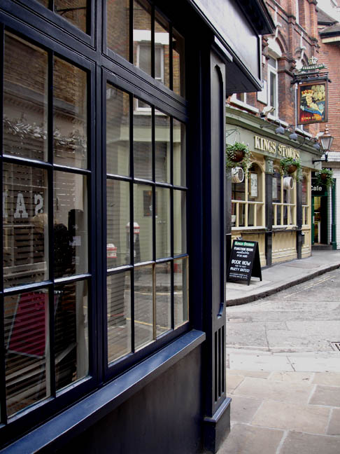

Freemasons' Hall in Great Queen Street, London WC2 was used as Marie Marvelle's hotel - 'The Magnificent'. (Also used in 'How Does Your Garden Grow?', 'One, Two, Buckle My Shoe', 'Mrs McGinty's Dead' and 'Murder on the Orient Express').

Dorney Court, Nr. Windsor, Berkshire as 'Yardly Chase'. (Also used in 'Sad Cypress').

Shoreham Airport. (Also appears in 'Lord Edgware Dies' and 'Death in the Clouds').

Inspector Japp arrests Henrik van Braks in Widegate St. London E1.